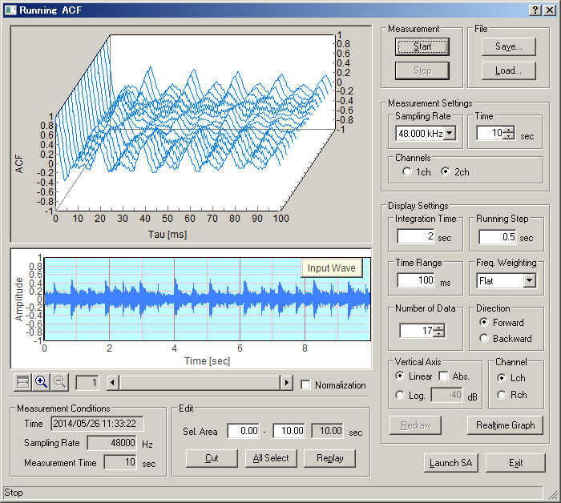

DSSF3 > RA > Reference Manual > Running ACF

| Items | Descriptions | |
|---|---|---|
| Graph (Upper) | The graph of the Running ACF is displayed. The vertical axis is the autocorrelation, the horizontal axis is the time, and the depth is the running step. | |
| Measurement | The measurement starts with [Start] button. Although the measurement stops automatically if the time you have set passes by, it is possible to stop it with [Stop] button. | |
| File | [Save...] button is used for saving the measured data in a file (database) See: Save measurement data [Load...] button is used for loading the stored data. See: Load measurement data |
|
| Measurement Settings | Sampling Rate | A sampling rate of A/D conversion. (44.1 or 48 kHz is recommended) |
| Time | Set the time for measuring. | |
| Channels | Choose the number of channel used for measurement, 1 channel (monaural) or 2 channels (stereo). | |
| Display Settings | Integration Time | Set the Integration Time of ACF between 0.001 and 10 s. |
| Running Step | Set the Running Step (calculation interval) between 0.001 and 10 s. | |
| Time Range | Set the maximum value of the horizontal axis (t) in the graph. | |
| Freq. Weighting | Select the frequency weighting filter. | |
| Number of Data | Set the number of the data on the time axis (= The depth of graph) | |
| Direction | Set the direction of the time axis of the graph. Forward: The time shifts forward. Backward: The time shifts backward. |
|
| Vertical Axis | Set the scale of the vertical axis (Autocorrelation value). Linear: Autocorrelation is indicated in linear scale between -1 and 1. If [Abs.] box is checked, absolute value of Autocorrelation is indicated between 0 and 1. Log: Autocorrelation is indicated in logarithm (decibel) scale. Its range is from 0 dB to the value inputted to the right text box. |
|
| Channel | In the case of stereo measurement, left channel's data is displayed by checking "L ch" radio button, and right channel's data is displayed by checking "R ch" radio button. (Left channel's data is displayed in light blue, and right channel's one is pink.) In the case of monaural measurement, only left channel is displayed. | |
| Redraw | When the setting is changed, clicking on this button displays new data. | |
| Realtime Graph | Displays in SA (Sound Analyzer) measured data. | |
| Input Wave | The waveform of the input signal is displayed. | |
| Normalization | The input data is normalized between -1 and 1. | |
| Measurement Conditions | The measurement conditions (Time, Sampling Rate, Measurement Time) are shown. | |
| Edit | Unnecessary part can be removed from the measured data. [Sel. Area] text boxes: Input the start and the end of the part you want to select. The selected area is painted with light blue. Or, this light blue area is changeable by dragging its left and right borderlines when the mouse cursor shape changes to "<-||->" over borderline. [Cut] button: Cuts off the part except light blue area. [All Sel.] button: Selects the whole area. (The whole area becomes light blue.) [Replay] button: Outputs the selected part (light blue area) from the speaker. During playback, a green line indicates where is replayed. |
|
| Launch SA | To analyze the measurement data to start the Sound Analyzer. | |
| Exit | Finishes "Running ACF" program. | |
DSSF3 > RA > Reference Manual > Running ACF